Une compagnie.
Un seul cockpit.
TaDiff · démonstration produit
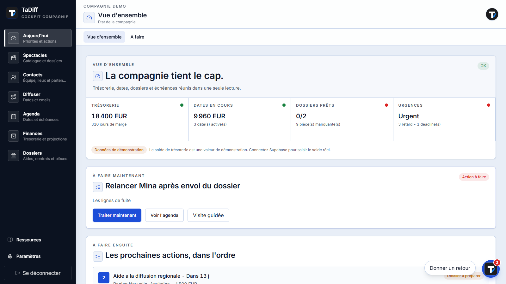
Le cockpit décide où regarder
→
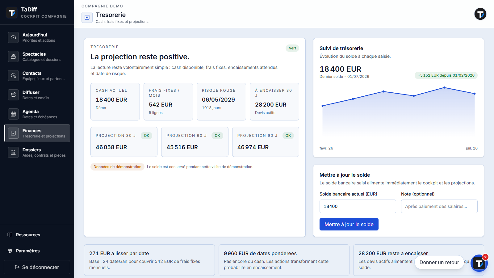
ProjectionChaque spectacle devient un dossier vivant
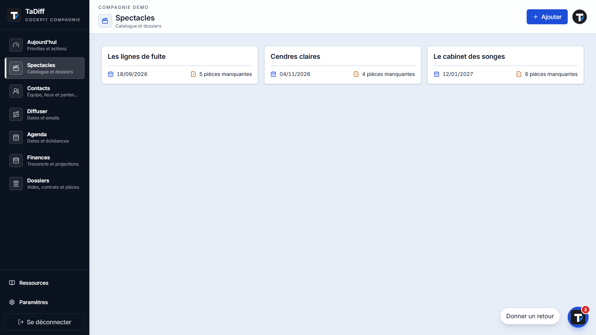
→
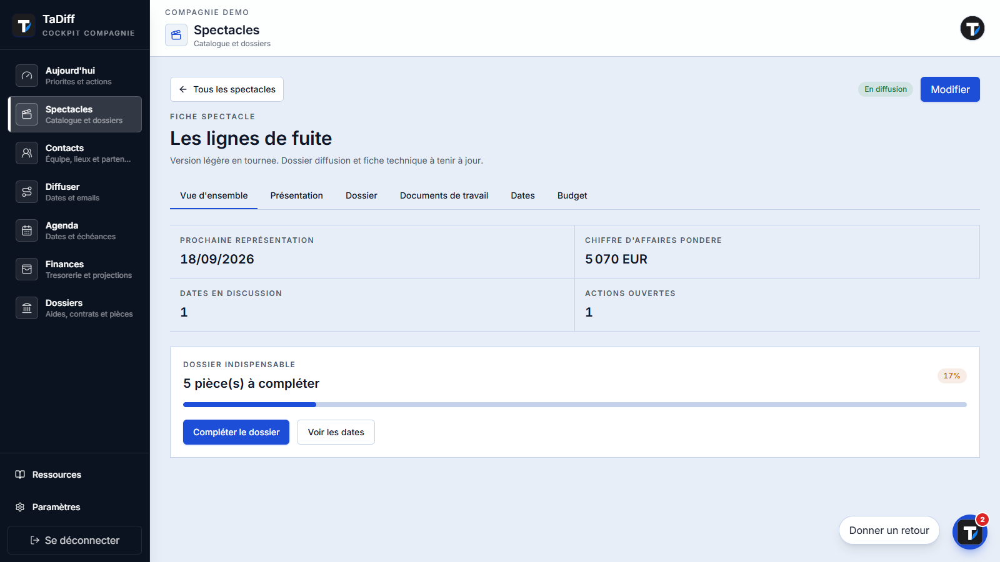
Une pièce ajoutée sert partout
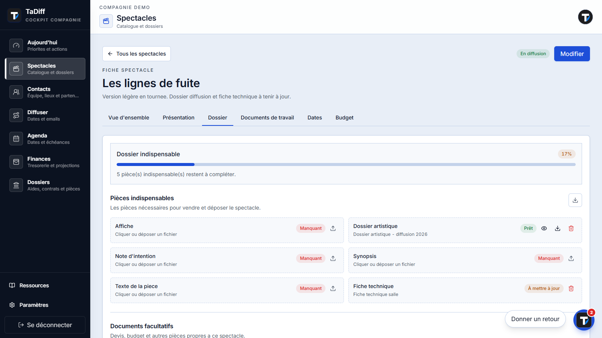
Prêt à envoyerLes actions restent reliées au spectacle
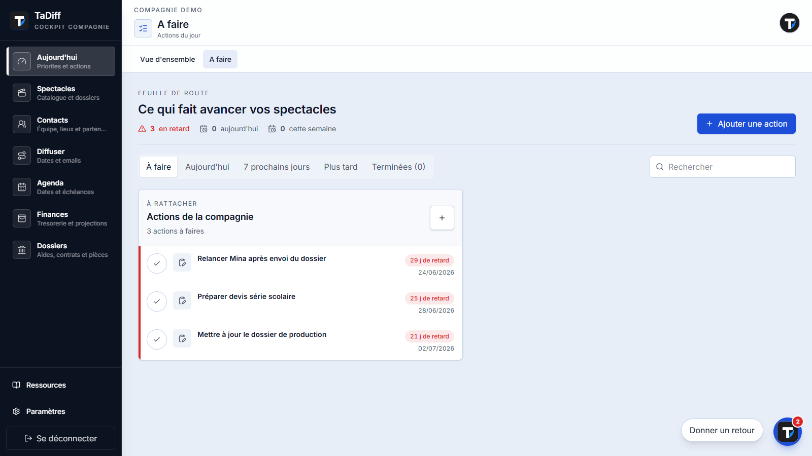
Historique conservéLe carnet prépare le bon message
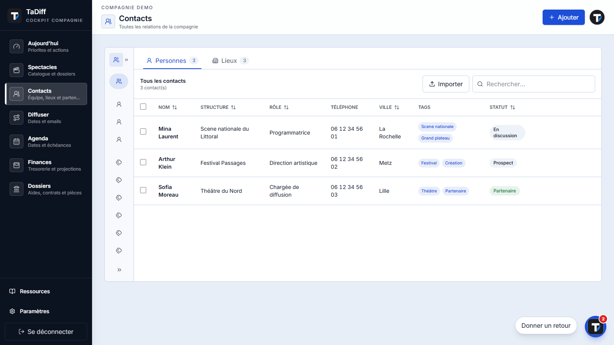
→
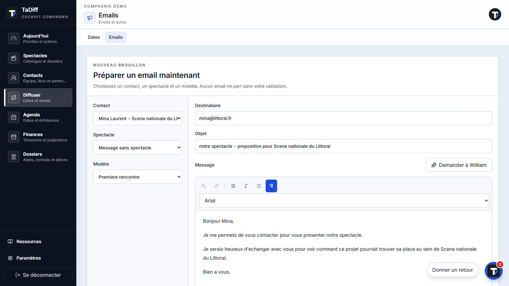
Les lieux deviennent un territoire
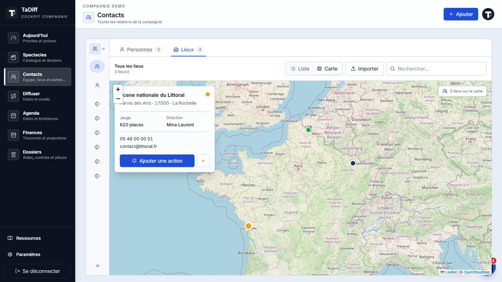
Action directeLa diffusion montre ce qui avance
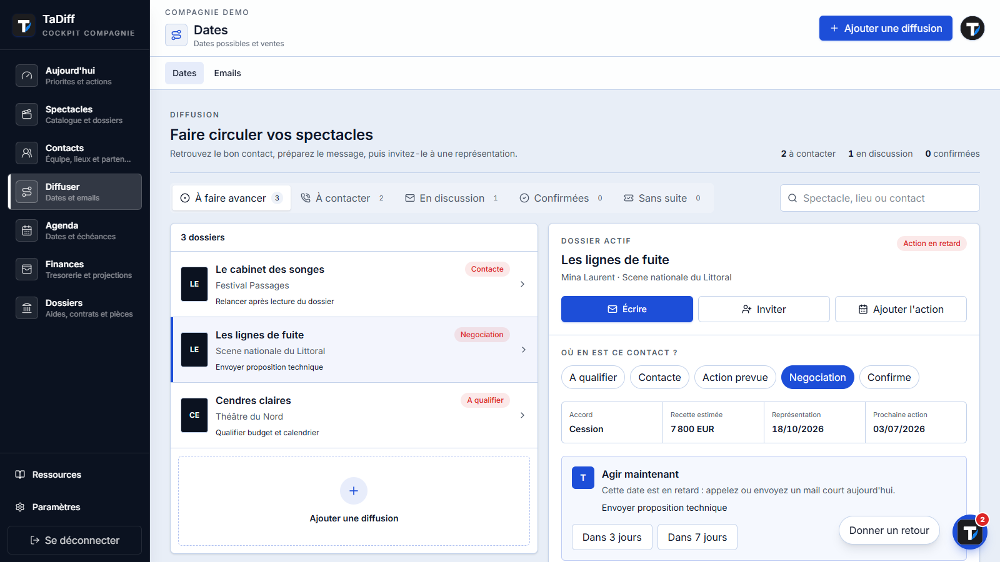
→
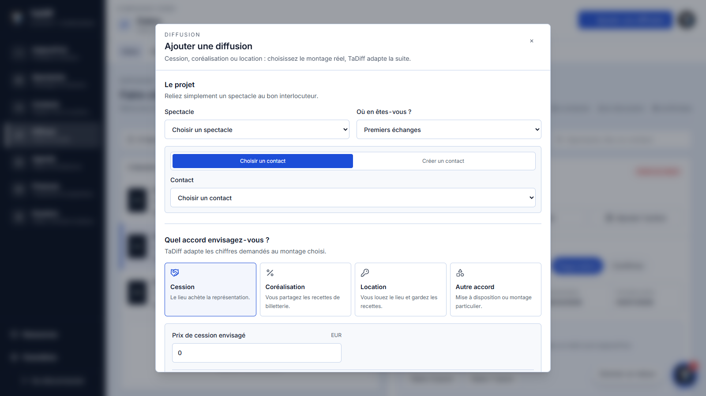
Une série ne signifie pas jouer tous les jours
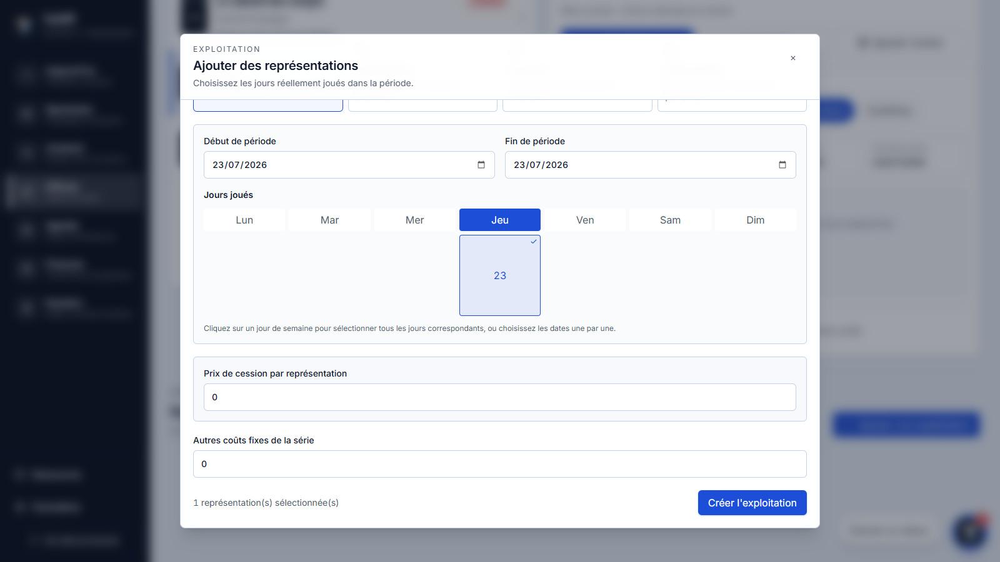
Jours réellement jouésLe calendrier relie les échéances
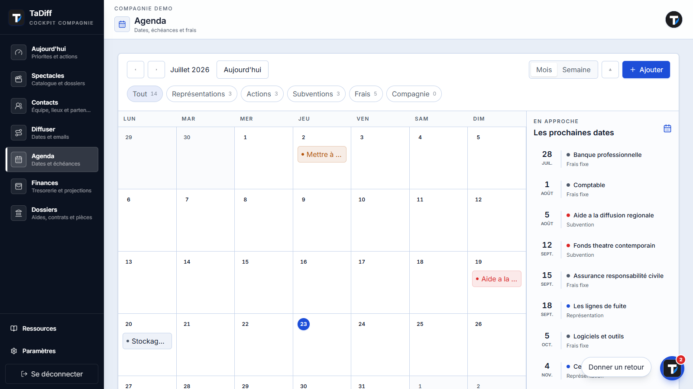
→
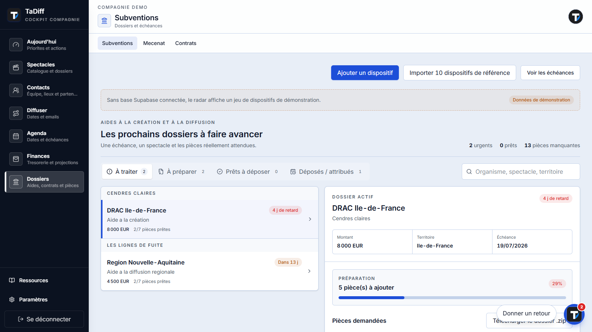
Les aides deviennent des dossiers actionnables
Dossier ZIP
Le mécénat suit le même chemin
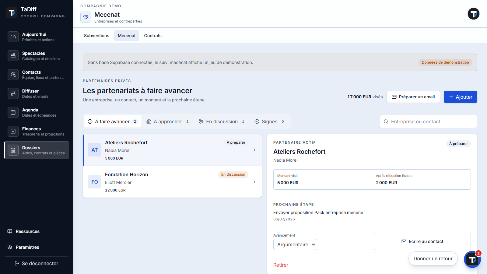
Partenaire actifWilliam lit le cockpit, pas une page vide
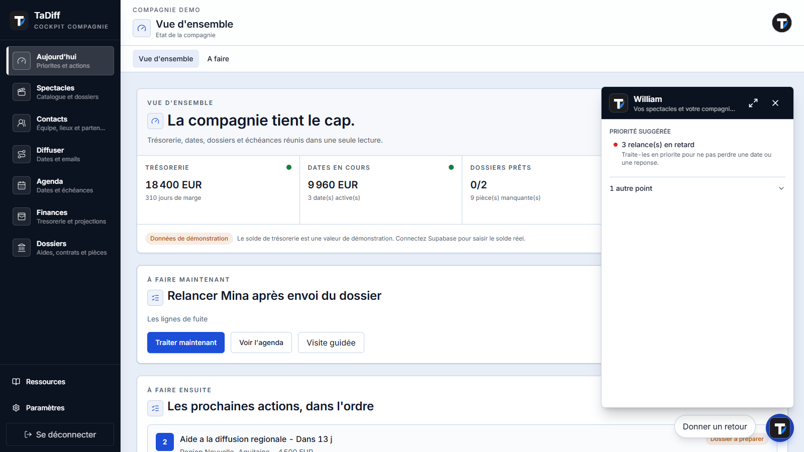
Priorité suggéréeTout part du spectacle, tout revient au cockpit
SPECTACLEsource commune
Contacts
Lieux
Emails
Actions
Diffusion
Calendrier
Trésorerie
Subventions
Mécénat
William